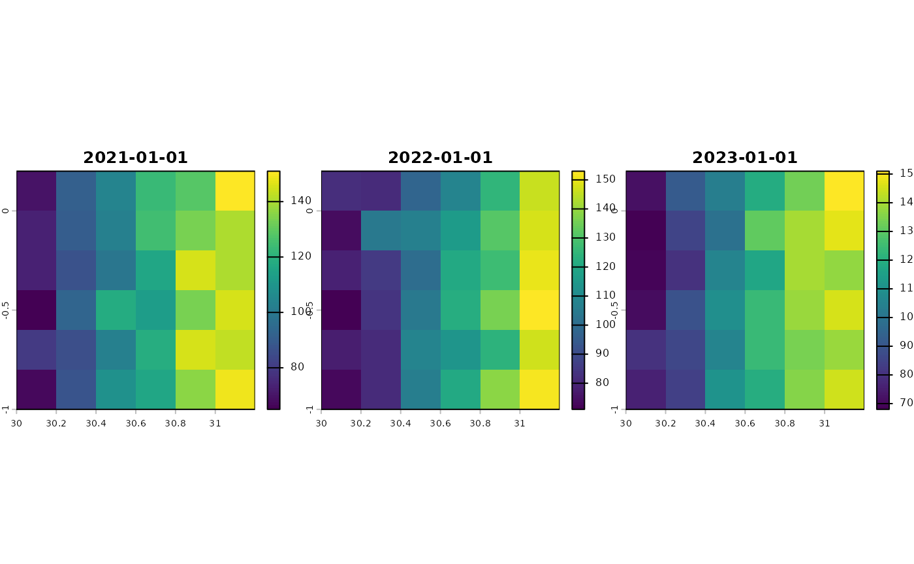
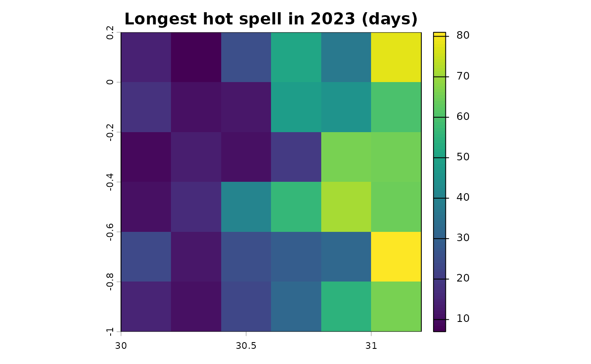
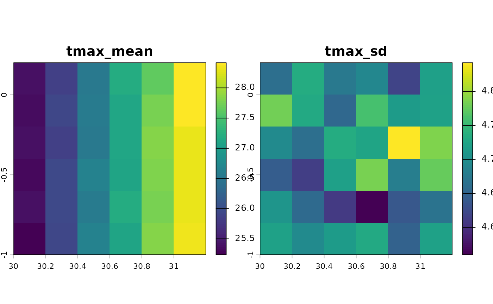
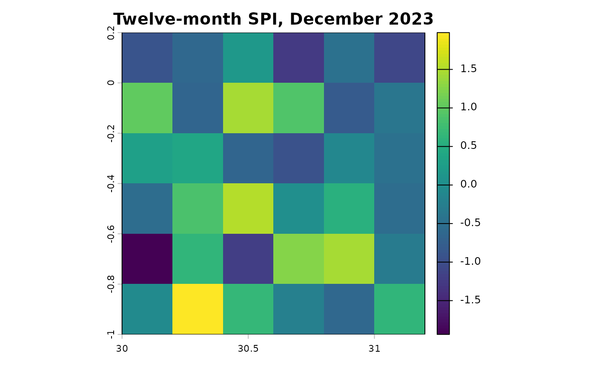
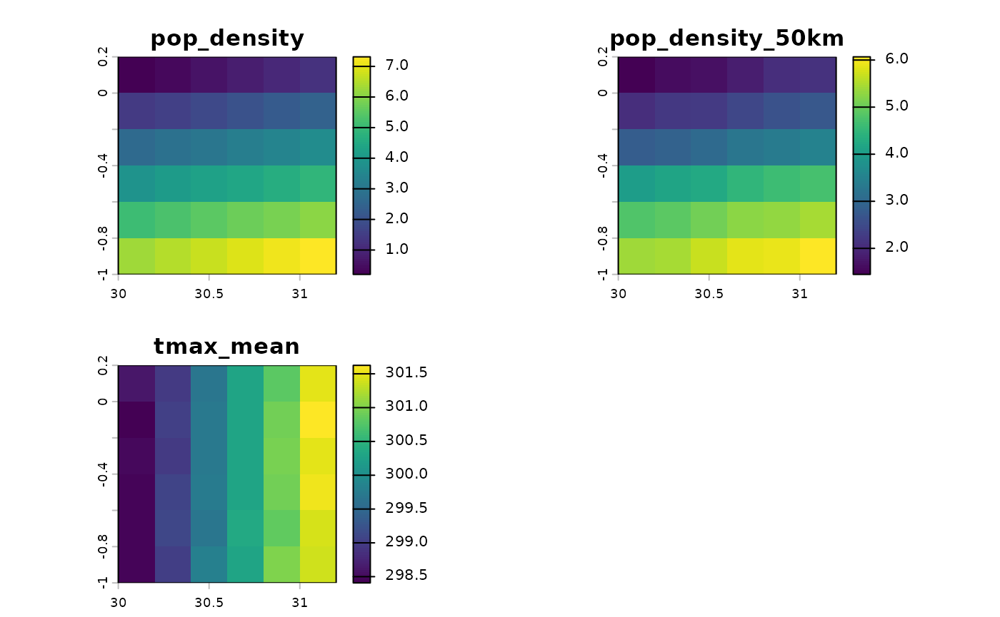

The indicators can be computed for every cell of a raster rather than at survey locations: for maps, for panels of grid cells or divisions, or to compute once and extract at many surveys. The results are rasters with one layer per indicator and period.
library(c4e)
tmax <- read_climate(system.file("extdata", "tmax_daily.tif", package = "c4e"))
#> Read tmax_daily: tmax [K], daily, 2021-01-01 to 2023-12-31, 1095 layers
#> (synthetic).Days beyond a threshold, per year
The step functions take a raster as well as a table.
calc_threshold_day() on a raster counts the days beyond
each threshold per year (or month) and sums their excess:
hot <- calc_threshold_day(convert_unit(tmax, "C"), above = 30)
names(hot)
#> [1] "day_abv_30_sum_2021" "day_abv_30_sum_2022" "day_abv_30_sum_2023"
#> [4] "C_abv_30_sum_2021" "C_abv_30_sum_2022" "C_abv_30_sum_2023"
terra::plot(hot[[grep("^day_abv_30", names(hot))]], nc = 3)
Extremes with spells, in one call
grid_indicators() is the grid counterpart of
weather_extremes(), with the same presets:
heat <- grid_indicators(tmax, preset = "heat", control = extremes_control(verbose = FALSE))
length(names(heat))
#> [1] 36
terra::plot(heat[["spell_abv_30_max_2023"]], main = "Longest hot spell in 2023 (days)")
The raster is processed in blocks of rows, so stacks larger than
memory can be handled; with filename, the result is written
to a GeoTIFF as it goes.
The context travels with the file
The layers keep their dates and units, and the indicator registry is kept in the GeoTIFF’s tags. Extracting the grid at survey locations gives the same table as the table path, registry included:
path <- file.path(tempdir(), "heat.tif")
terra::writeRaster(heat, path, overwrite = TRUE)
survey <- read.csv(system.file("extdata", "survey.csv", package = "c4e"))
points <- georef_coord(prepare_coord(survey, lat_var = lat, lon_var = lon))
#> Taking the coordinates as longitude and latitude in "EPSG:4326"; give `crs`
#> otherwise.
from_file <- extract_by_coord(terra::rast(path), points)
head(from_file, 3)
#> # A tibble: 3 × 16
#> # Context: tmax [C], year, long; key ID; 12 indicators
#> ID x_cell y_cell period day_abv_30_sum C_abv_30_sum day_abv_35_sum
#> <chr> <dbl> <dbl> <date> <dbl> <dbl> <dbl>
#> 1 30.27330_… 30.3 -0.1 2021-01-01 90 183. 4
#> 2 30.27330_… 30.3 -0.1 2022-01-01 104 196. 5
#> 3 30.27330_… 30.3 -0.1 2023-01-01 85 169. 1
#> # ℹ 9 more variables: C_abv_35_sum <dbl>, spell_abv_30_max <dbl>,
#> # spell_abv_30_mean <dbl>, spell_abv_30_sum <dbl>, spell_abv_30_n <dbl>,
#> # spell_abv_35_max <dbl>, spell_abv_35_mean <dbl>, spell_abv_35_sum <dbl>,
#> # spell_abv_35_n <dbl>
c4e_labels(from_file)[["spell_abv_30_max"]]
#> [1] "longest spell above 30 C (2+ days)"Statistics and indices per cell
calc_par() gives each cell’s statistics,
calc_percentile() its percentiles by month, and
calc_std_index() its SPI:
normals <- calc_par(convert_unit(tmax, "C"), fn = c("mean", "sd"))
terra::plot(normals)
pre <- read_climate(system.file("extdata", "pre_monthly.tif", package = "c4e"))
#> Read pre_monthly: pre [mm/month], monthly, 1984-01-01 to 2023-12-01, 480 layers
#> (synthetic).
spi <- calc_std_index(pre, scale = 12)
terra::plot(spi[["spi_12_2023-12"]], main = "Twelve-month SPI, December 2023")
Controls per cell
grid_controls() computes the population density within a
radius (people per square kilometre of land), climate normals and other
layers, as one raster:
template <- tmax[[1]]
terra::time(template) <- NULL
pop <- terra::rast(template, vals = seq(100, 3600, by = 100))
controls <- grid_controls(pop = pop, radius_m = c(0, 50000),
climate = list(tmax = tmax), years = 2, stats = "mean",
control = controls_control(verbose = FALSE))
terra::plot(controls)